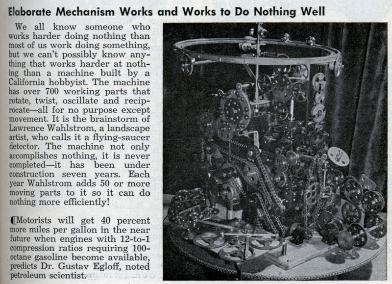

Un mécanisme élaboré qui tourne et tourne sans rien faire. Son auteur l'appelle "détecteur de soucoupes
volantes" Mechanix Illustrated, fév 1954

Siège de Dien Bien Phu.
A Lombez (Gers), après avoir observé un engin immobile à très basse
altitude, à la verticale d'un pont, Mme Jandot et 3 autres témoins anonymes se séparent en silence,
comportement que Mme Jandot elle-même ne s'explique pas, au point de le trouver anormal. Effet psychique ? LDLN n° 176, p. 15.
Un pilote de l'USAF volant dans un F-86 Sabre écrase son jet sur le versant de Grouse Mountain
au-dessus du nord de Vancouver (Colombie Britannique). L'appareil aurait pris en chasse
un ovni Vancouver Sun, Vancouver Province and Tacoma News Tribune newspaper archives < Heath, Gord. "1954 Grouse Mountain USAF F86 Crash", UFOBC.
La Presse Magazine n° 432 du 16, titrant : Croyez-vous aux soucoupes volantes ?
A Coniston (Angleterre), photos de Stephen Darbishire.
A Todd River Downs (Australie centrale), un indigène longe à cheval une petite crête
lorsqu'un objet sphérique de 13 m de diamètre environ me désarçonna presque ; il s'éleva tout à coup avec un
souffle puissant, en grondant et en émettant 4 colonnes de fumée Wilkins U. 211.
L'écrivain, astronome amateur et ornithologue Cedric Allingham voit
une soucoupe volante près de Lossiemouth, sur la côte nord-est de l'Ecosse. Un être d'environ 1,80 m en émerge et
s'approche de lui. L'être est en tous points semblable à un humain, mis à part un front très haut et porte un
vêtement d'une seule pièce, chaussures comprises, mais pas de casque. De minuscules tubes sortent de ses narines, ce
que le témoin interprète comme une partie d'un appareil respiratoire. Le témoin et l'"homme" s'arrangent pour
converser par signes et le visiteur affirme venir de Mars. Des photographies, aussi bien de la soucoupe que
du "Martien", auraient été prises et publiées Allingham, Cédric, Flying Saucer from Mars, Frederick Muller, Londres < Bowen, Charles: En quête d'humanoides, p. 15.
Le président Dwight David Eisenhower approuve la recommandation du NSC de construction de la Ligne DEW.
A Newburyport (Massachusetts), l'architecte R. M. Pierce,
l'ingénieur de la marine George Avery et une autre personne observent un disque argenté, avec une bande blanche,
émettant un très fort grondement durant 30 à 60 s Cas Blue Book n° 2913 non résolu.
A Peakskill (New York), M. et MmeForster voient
un engin au sol. Auprès de l'appareil se tient une femme portant des habits lumineux, une sorte de capuchon et des
verres épais. Elle tient un tube dans une main et une boîte dans l'autre. Mme Forster, commotionnée, doit être prise
en charge par un hôpital Barker, Gray Roscoe:.